Twelve districts that were built, the patterns they share, the partners behind each of them, and how the buildings and the money came together.
These places began the same way the district begins: a champion convened partners, a neutral entity was formed, an anchor and a public tool arrived together, and a community was kept close. Their industries range from semiconductors to biotech to clean energy. What the district borrows is the method, the way a coalition turns one building into a district. The closest match to West Salem is the first one.
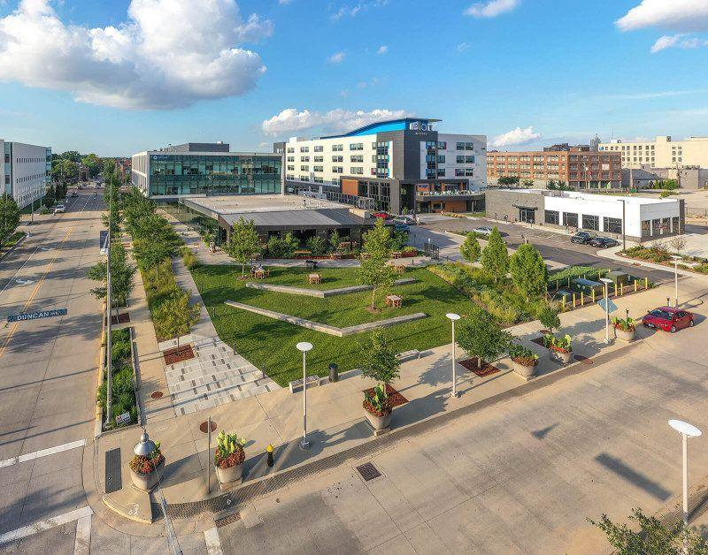
Five anchor institutions, Washington University, BJC HealthCare, Saint Louis University, the University of Missouri-St. Louis, and the Missouri Botanical Garden, came together in 2002 after a university chancellor visited Kendall Square and brought his peers along to see it. They pooled roughly $29 million, formed a single nonprofit master developer, and paired it with Missouri's redevelopment and tax-increment financing powers to transform a brownfield into a district. The lesson for Salem is direct: a handful of anchors, modest pooled equity, one neutral nonprofit, and a public financing tool are enough to begin.
Visit Cortex ↗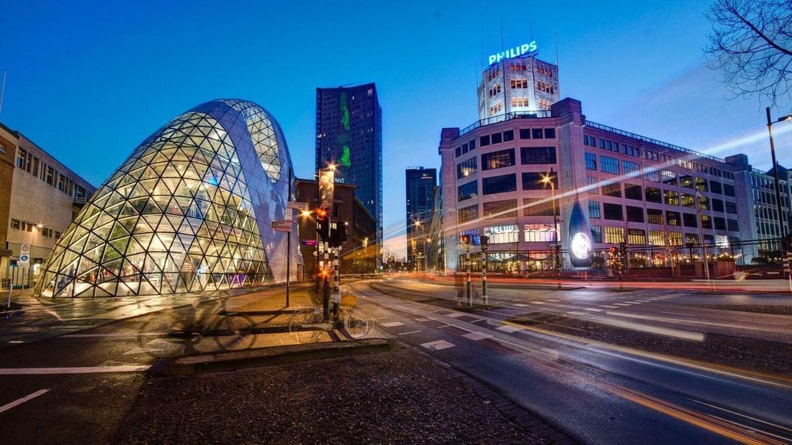
A mayor, a university president, and a chamber-of-commerce president convened a standing partnership and held it in the Brainport Foundation. The region became home to ASML, one of the world's most valuable technology companies.
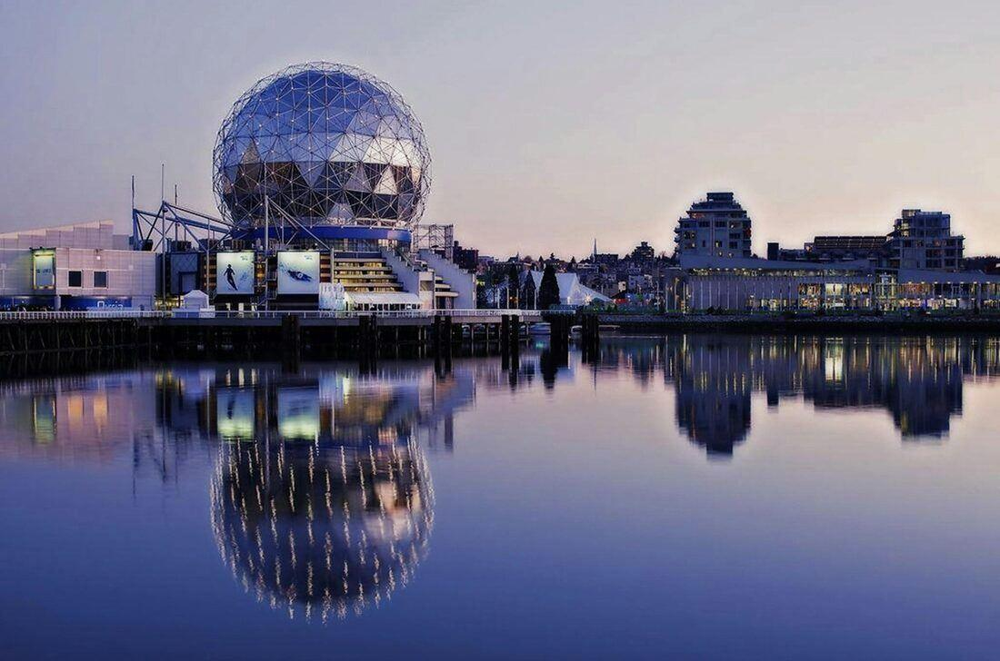
The City of Stockholm and Ericsson created a neutral foundation in 1985; its first act was a single shared building that put KTH university labs next to companies under one roof.
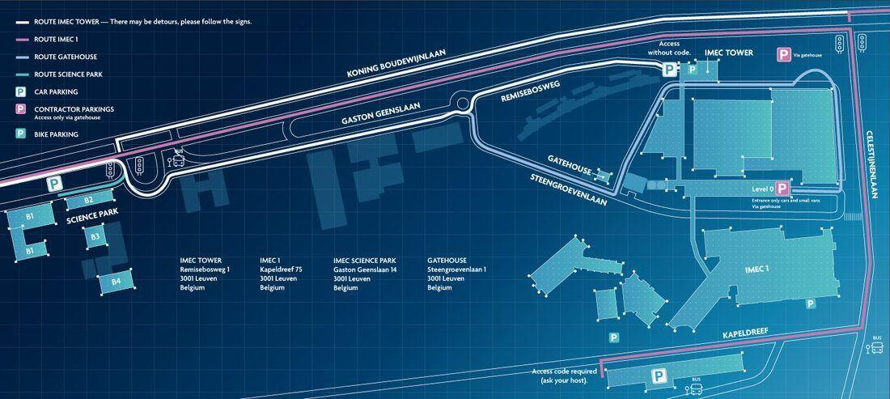
In 1984 the Flemish government funded a neutral research institute spun out of KU Leuven. Because no single company owns it, the world's rival chipmakers all fund it and use it.
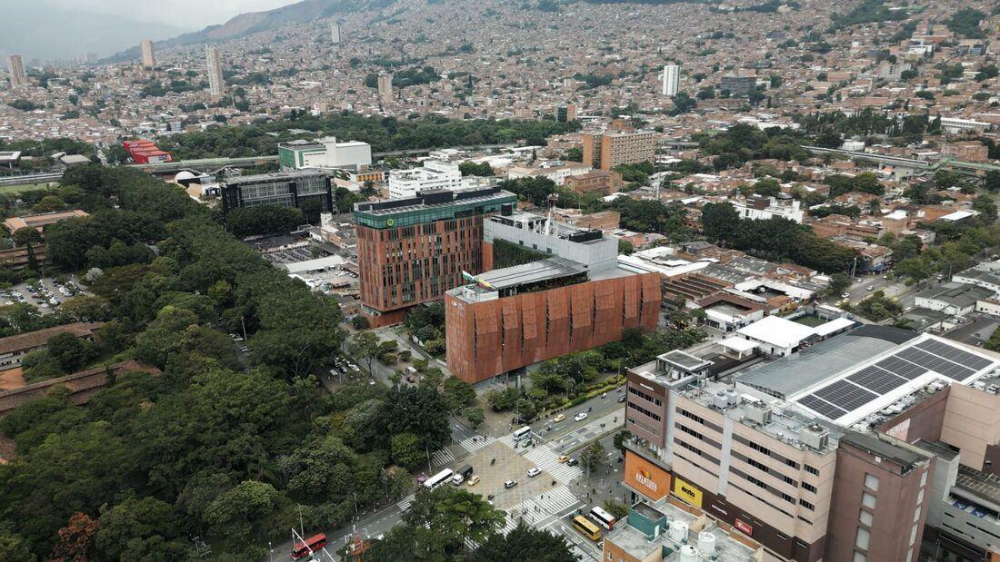
The city and its publicly owned utility created an innovation corporation funded by utility dividends, and seated citizens as a full partner. The district became central to the city's wider transformation.
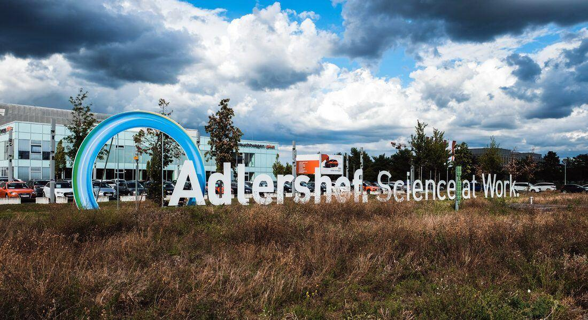
The State of Berlin relocated Humboldt University's science faculties physically onto the site, then grew a science city of around 1,000 companies and 16 research institutes around them.
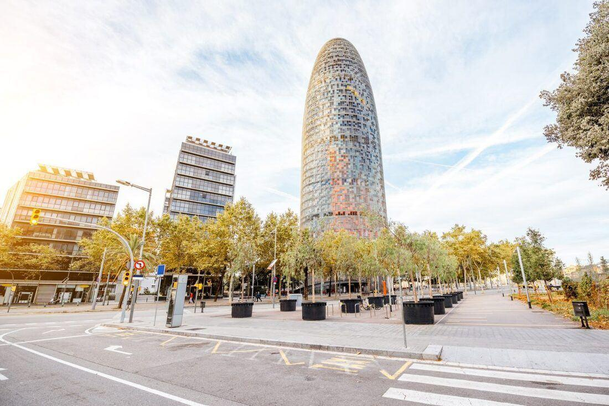
The city rezoned 200 hectares of old industrial Poblenou for knowledge work and recycled the value uplift into public infrastructure, drawing three universities and 1,400-plus firms.
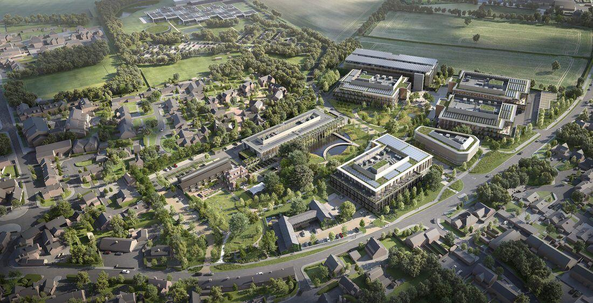
In 1970 a Cambridge college committed its own land and endowment on a multi-decade horizon, seeding a cluster that now spans thousands of knowledge companies.
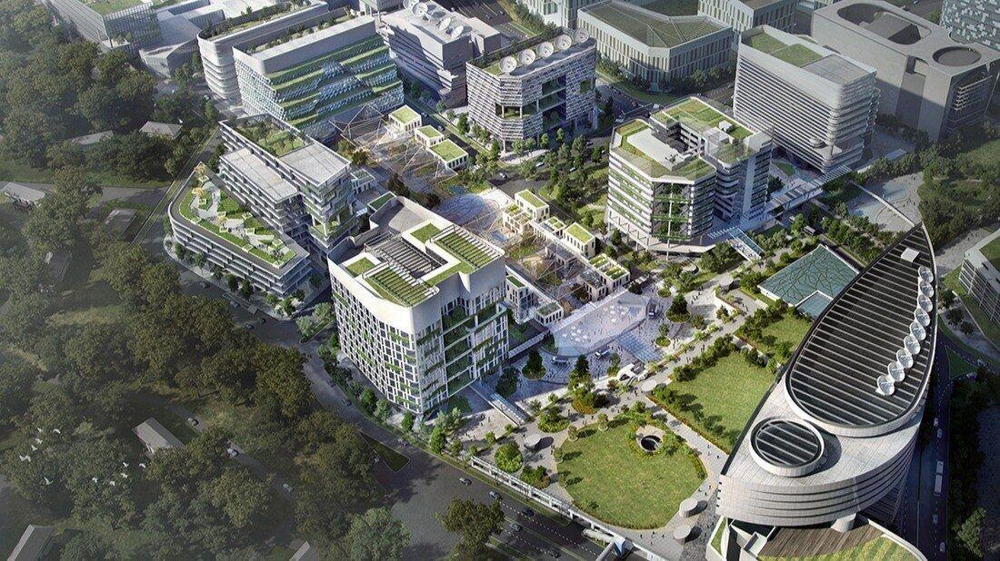
The state developer built the district and moved national research institutes in first, beside the National University, so the district had serious tenants from its first day.
The American model began at Research Triangle Park: three universities, a governor, and business leaders placing a district in a neutral nonprofit so rival schools could cooperate and the work could move at private speed. The cases that follow refine the same idea, from a university acting like an owner to a mission nonprofit paired with a specialist developer.
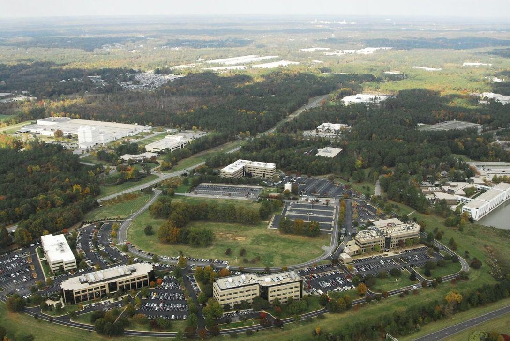
Duke, UNC, and NC State, with the governor and business leaders, placed the district in a neutral private nonprofit, chosen deliberately so rival universities could cooperate and the effort could move at private speed.
MIT acted as a deliberate developer of land it had long held, winning a city upzoning and building one of the densest innovation clusters in the world next to its own campus.
A university-backed nonprofit joined a specialist developer and an institutional capital partner in a joint venture, splitting mission from execution cleanly.
Read down a column to see how complete a district's playbook was. Read across a row to see how universal a pattern is. The scoring below is ours, and the notes underneath include a correction we had to make to it.
| Pattern | Cortex St. Louis | Brainport Eindhoven | Kista Stockholm | Adlershof Berlin | 22@ Barcelona | Newlab Navy Yard | The district intent |
|---|---|---|---|---|---|---|---|
| Coalition formed before the real estate | ● | ● | ● | ○ | – | ● | ● |
| A neutral entity holds the mission | ● | ● | ● | ● | ○ | ● | ● |
| One shared building came first | ○ | – | ● | – | – | ● | ● |
| Researchers physically on site | ○ | ● | ● | ● | ● | ○ | ● |
| A public financing tool paired with the anchor | ● | ○ | ○ | ● | ● | ● | ● |
| Community seated in governance | ○ | – | – | – | – | ● | ● |
| Homes inside the district | ○ | ● | ● | ● | ● | – | ● |
Newlab is the clearest model we have found for the workspace at the center of a district: a venture and maker community for hard technology in one rehabilitated industrial building, giving founders infrastructure to prototype, real projects to pilot and a path to capital. It is also one building inside a gated industrial campus, closed in the evening, with the nearest homes somewhere else. The hub is what we borrow. The neighborhood around it is what we add.
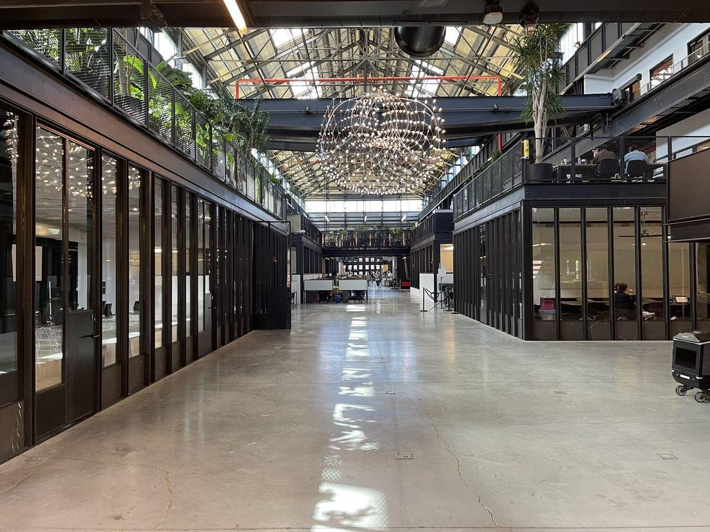
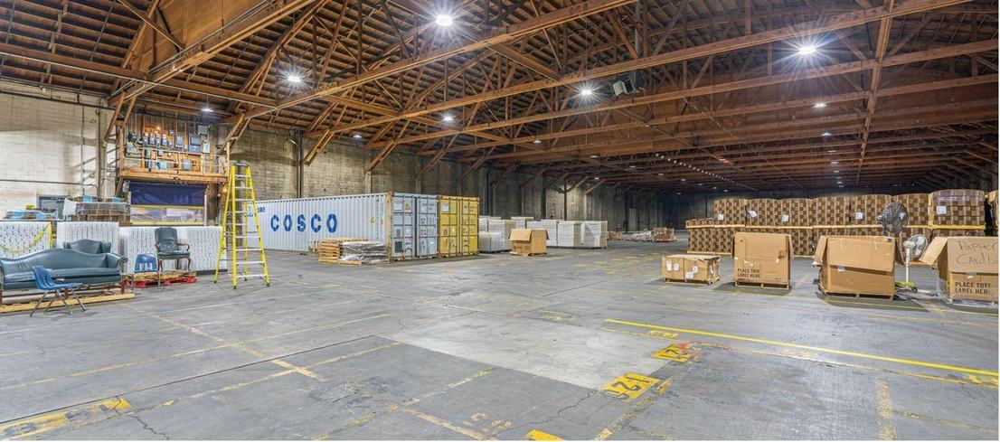
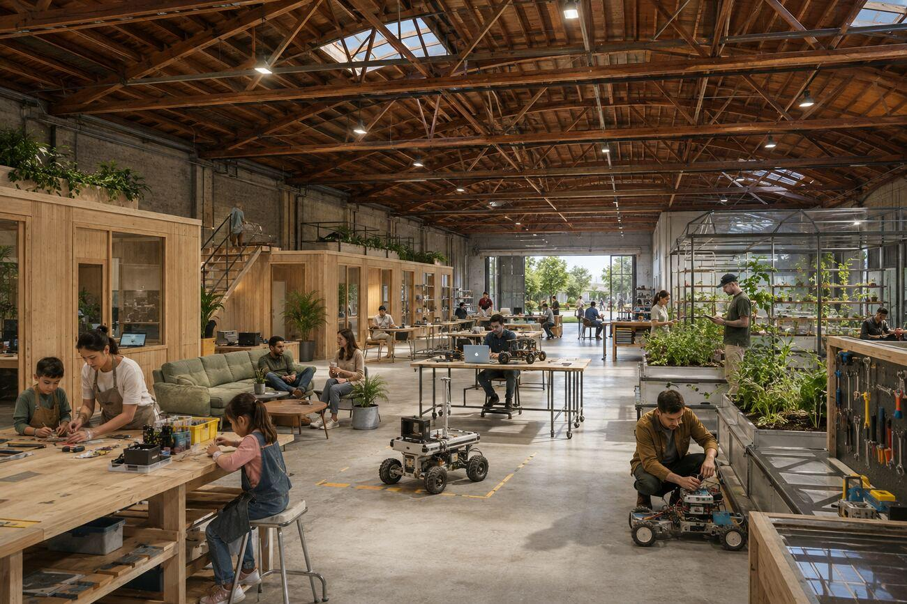
Founded in 2016 by David Belt and Scott Cohen, modeled on the MIT Media Lab, inside Building 128, an 1899 Navy machine shop rebuilt as roughly 84,000 square feet of studios, labs, and a full fabrication shop, metal, wood, 3D printing, electronics, and CNC.
A public landlord owned and rehabbed the shell; a private operator brought the vision and the curation. The roughly $82.8M Building 128 project drew $25M of New Markets Tax Credits alongside historic tax credits, federal, state, and city grants, and private capital. A coalition built it.
Shared tools, a curated membership and real pilot projects reinforce each other. Newlab reports more than 300 member startups and over 1,000 members across its locations, and has opened a second site at Michigan Central in Detroit with Ford. The model has transferred once already.
The same structure appears in most of these districts. Four partners come together, a university, a government, an industry and a community, and a neutral entity holds the mission so no single party owns it. The pattern is usually called the triple helix, with the community as a fourth strand.
Each partner brings what the others cannot: the university its research and talent, government its land and patient capital, industry its anchor demand and jobs, and the community its workforce and its stake in the result. The case studies below show it.
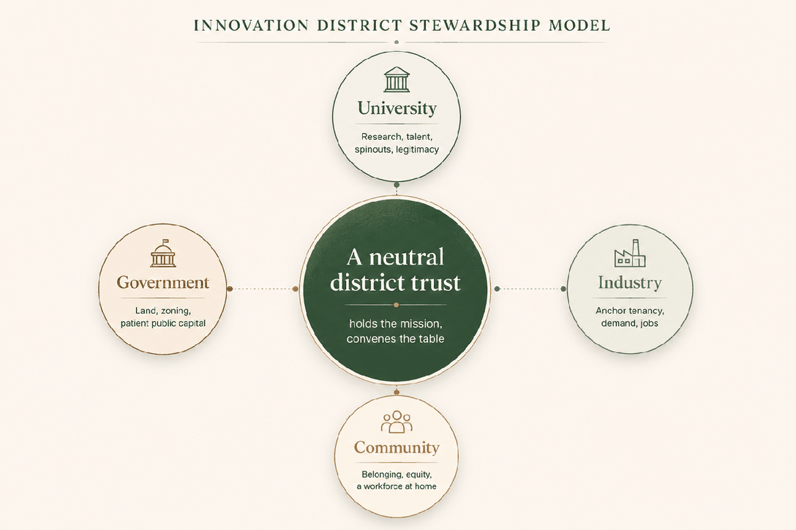
This is a starting point for conversations, not a roster. The precedents suggest which kinds of partner a district needs and roughly when. Which specific institutions fill each role is open, and in most of the cases we studied the answer changed once the work started.
What that partner brings
Where we would look
Applied research programs, graduate talent, and shared instrumentation that no single company would buy alone.
Oregon's research universities, particularly those holding federal Tech Hub designations, and robotics and precision-agriculture programs in and beyond the state.
The pipeline that fills the jobs, from technician through engineer, plus small-business support for the companies that spin out.
Community colleges and in-town universities already running robotics, industrial electronics and machining programs in Salem, with apprenticeship partners in advanced manufacturing.
Land, entitlement, infrastructure and value-capture financing. In most of these precedents the public tool arrived alongside the anchor rather than after it.
The City of Salem and its Urban Renewal Agency, working through the Riverfront-Downtown urban renewal area.
Incentives, site readiness, and alignment with the federal programs the state already leads.
Business Oregon and the state's regional coordination function.
The standing table that holds employers, training and capital together between announcements.
The Mid-Willamette Valley's public-private economic-development organization, which already convenes this group.
Founding tenancy and the credibility that makes the second commitment easier. The hardest seat to fill and the one that sets the timeline.
Four kinds are described below, drawn from what actually happened in the precedents.
Legitimacy, workforce, and a seat in governance from the start rather than a consultation later.
West Salem neighborhoods, tribal partners, and the organizations already representing the valley's agricultural workforce.
In these districts one commitment usually came first and made the rest possible. The anchors were not all the same kind of organization, and the difference is worth understanding before deciding who to ask.
At Cortex, hospital and university anchors pooled roughly $29M and formed a nonprofit master developer. A health system has long-horizon capital, a permanent local presence, and a research mission. In Salem the regional care economy is the obvious place to look, and the health institute concept is one route to that conversation.
Berlin moved university science faculties physically to Adlershof. Singapore moved national research institutes into One-North before the private tenants arrived. A relocated lab is the strongest possible signal, and the most expensive to arrange.
Eindhoven organized around one company's supply chain and its people. This is the fastest route and the most fragile, because the district's fortunes track a single firm. Salem has candidates in advanced manufacturing and logistics; none has been approached about this.
Medellin funded Ruta N from a publicly owned utility's dividends and seated citizens as a full partner. The anchor need not be a tenant at all. It can be a durable source of money with a public mandate attached.
Start with the buildings that are already standing. The district grows one building at a time, adapting West Salem's raw high-bay industrial stock to suit makers, ventures and labs, and adding purpose-built facilities as demand appears. Reuse is faster, lower-carbon and cheaper to finance, and a retrofit can draw historic and New Markets tax credits, as Newlab's Building 128 did. Newlab, Michigan Central and Greentown Labs all began this way. It also lets the district open early and grow on real occupancy.
Purpose-built shared facilities follow demand: fabrication and instrumentation that no single company would buy alone, and the labs and high-bay space the applications on this page require. The order matters. Retrofit proves the occupancy that justifies the new construction.
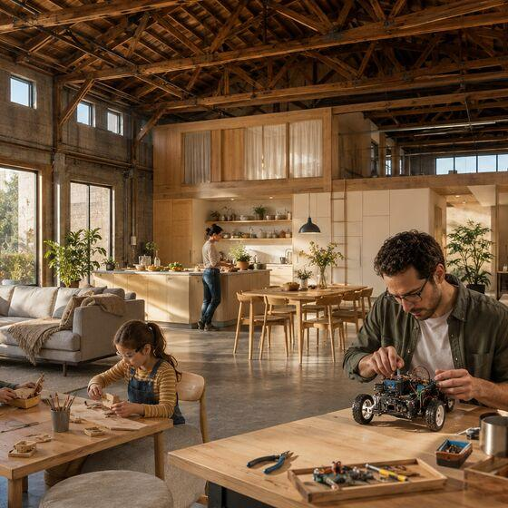
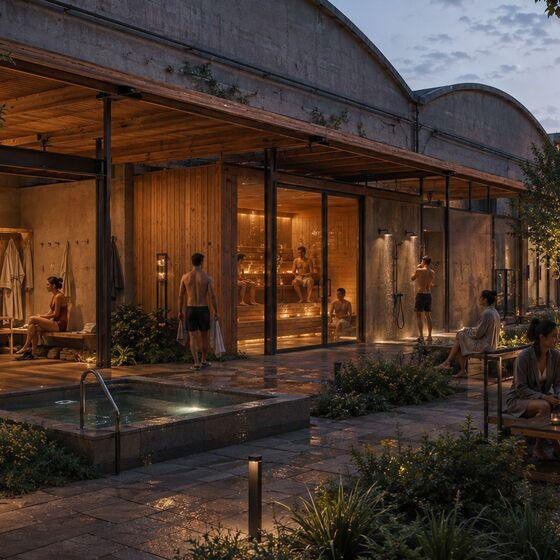
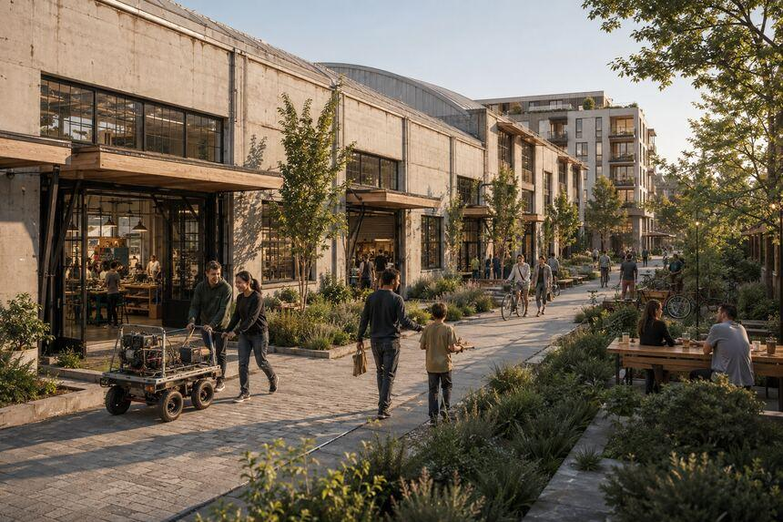
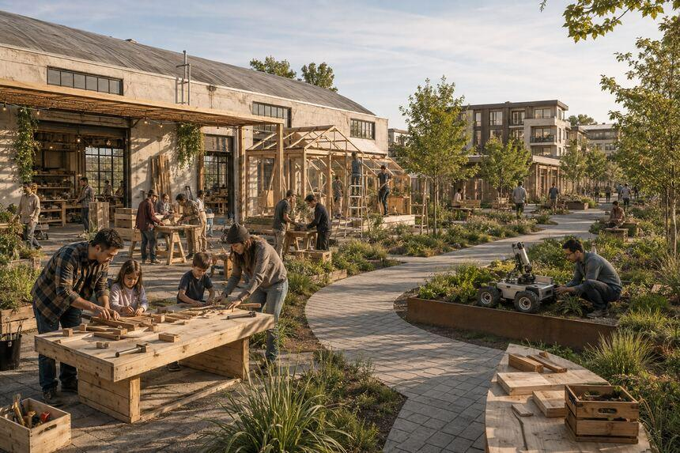
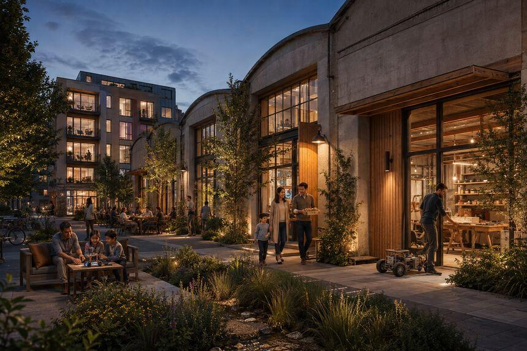
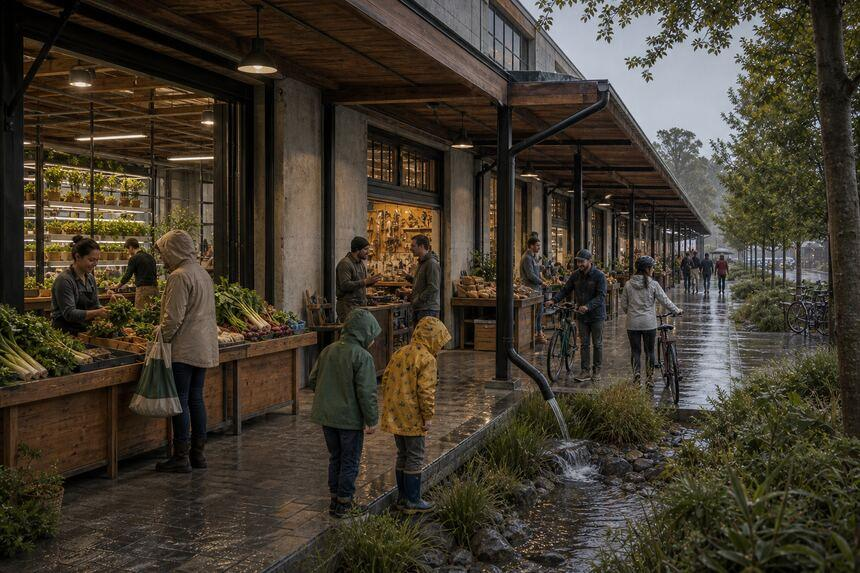